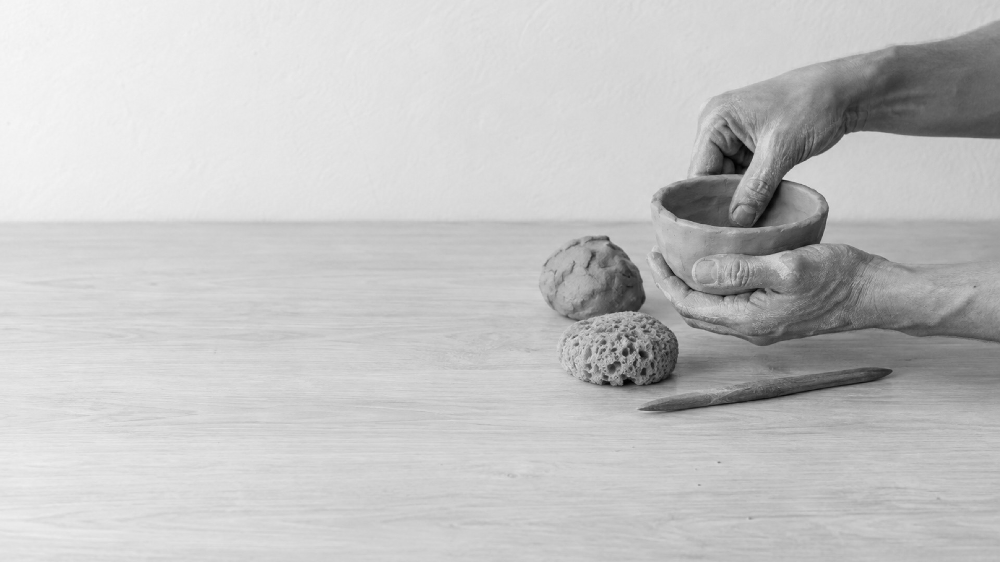
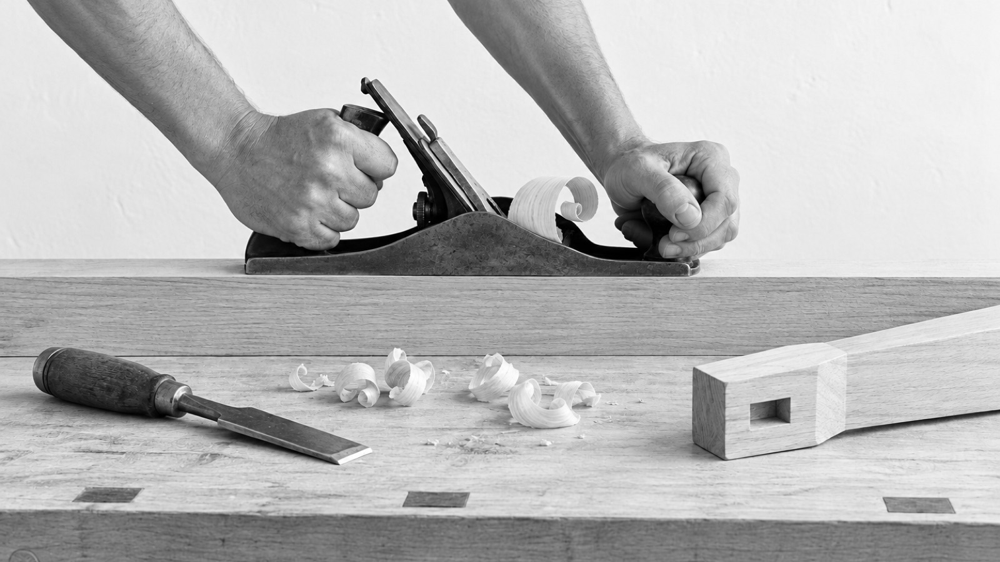
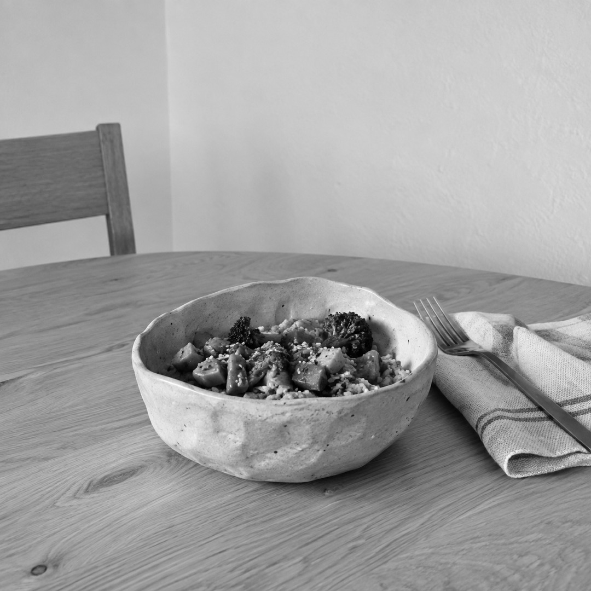
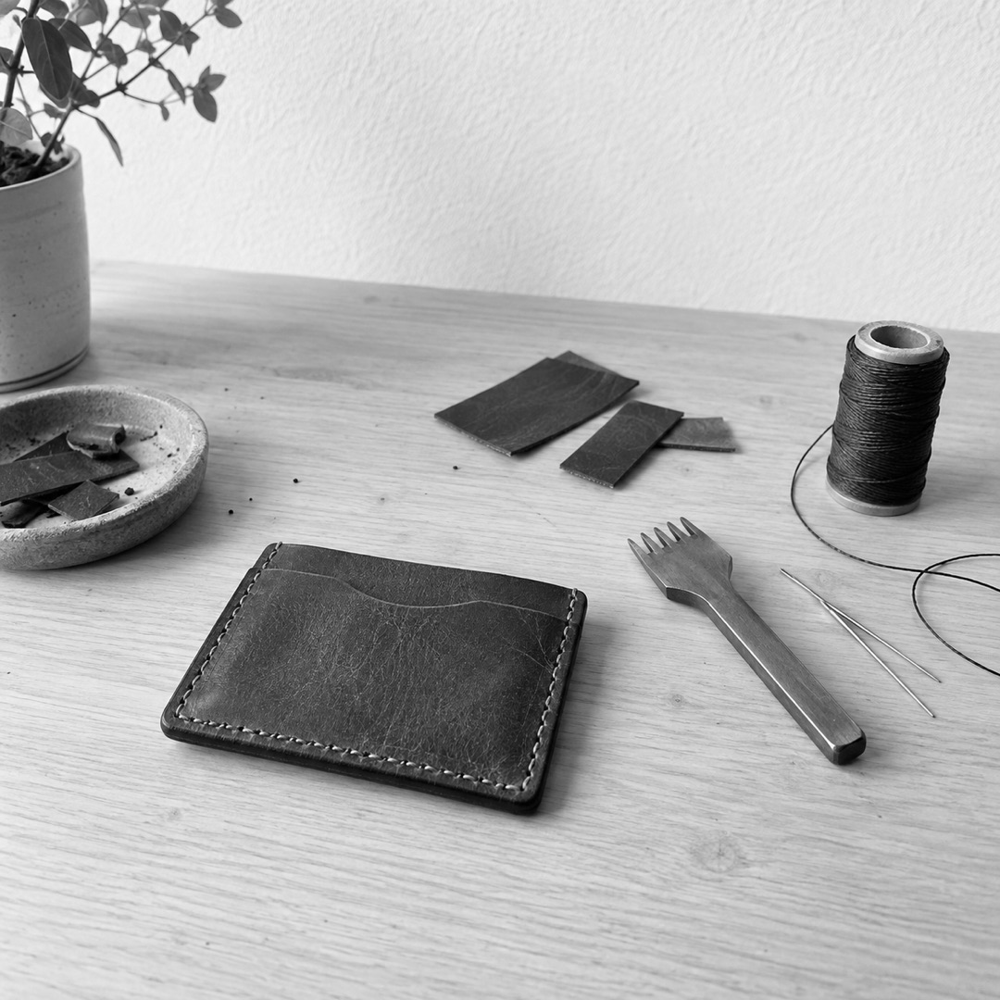

買前先試看
每門課前三支影片免費，手感對不對，看了再決定。

每門課前三支影片免費，手感對不對，看了再決定。
課程依實際製作順序分章，跟著做就有成品。
關掉再回來，從上次停的那一秒繼續，不用重找。
每一門課都由有實際作品與教學經驗的在地職人親自錄製。
 課程總長4 小時 20 分
課程總長4 小時 20 分

課程總長5 小時 40 分 課程總長2 小時 50 分
課程總長2 小時 50 分

下班後一天看一支，兩週後家裡真的多了一個自己捏的碗，很有成就感。

試看的時候就發現老師會把失敗的那次也拍進去，這點對新手超重要。
觀看未超過 20%，七天內可全額退費。
課程上架後更新的單元，也一併免費看。
每個單元都有問答區，講師 72 小時內回覆。